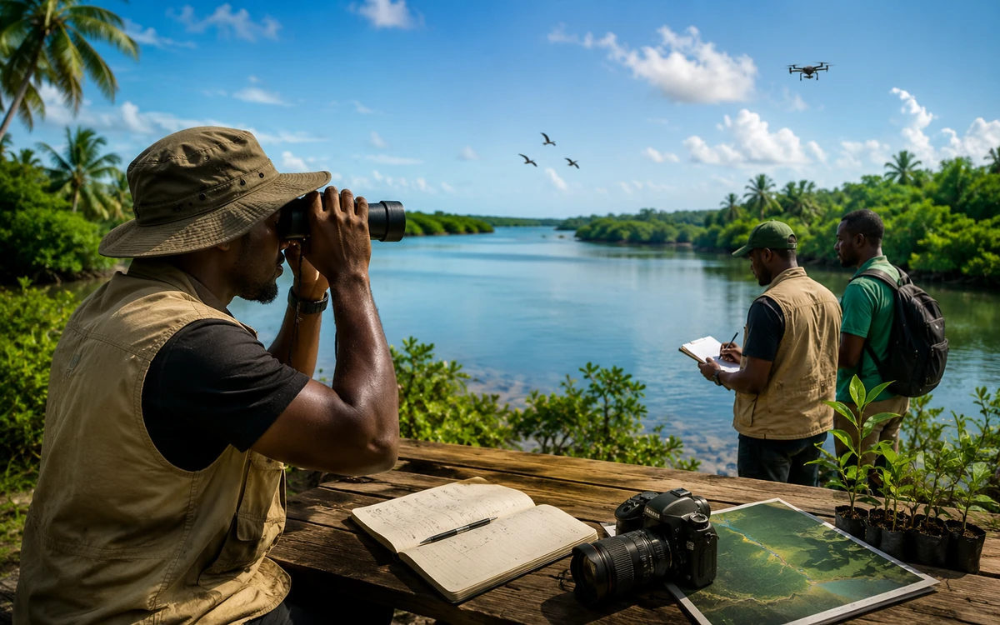

Veille citoyenne
Suivi documentaire des pressions, initiatives et signaux utiles.
ONG ivoirienne à vocation internationale
L’Observatoire Protégeons notre Littoral est un programme citoyen, documentaire, pédagogique et territorial porté par l’ONG.
Rôle
L’Observatoire Protégeons notre Littoral organise une veille citoyenne et documentaire autour des espaces littoraux, marins et lagunaires. Il rassemble des ressources validées, prépare des fiches ressources, constitue une bibliothèque de vulgarisation et soutient la contribution citoyenne sans publier de données personnelles. L’objectif n’est pas de contrôler, mais de documenter, vulgariser, archiver et soutenir la mobilisation citoyenne.
Suivi documentaire des pressions, initiatives et signaux utiles.
Organisation de documents publics, repères territoriaux et visuels autorisés.
Préparation de fiches, repères, contenus de vulgarisation et ressources accessibles au public.
Accueil de contributions utiles, après vérification éditoriale et sans signalement nominatif.

Veille citoyenne
La veille littorale permet de suivre des informations, rapports, dates, ressources et signaux utiles à la compréhension des enjeux côtiers, marins, lagunaires et climatiques.
Aucun signalement nominatif, aucune donnée personnelle et aucune photo identifiable ne doivent être publiés sans autorisation et validation éditoriale.
Les formulaires externes sont utilisés pour recueillir les demandes adressées à l’ONG. Les informations transmises sont utilisées uniquement pour traiter la demande concernée. Confidentialité des formulaires.